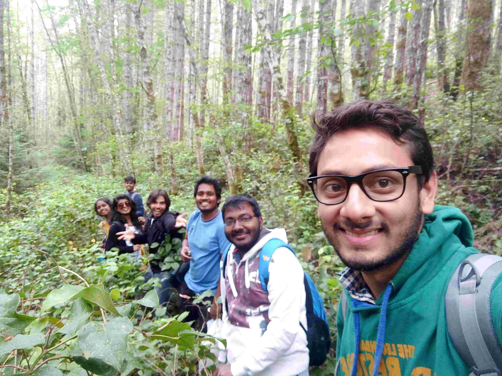
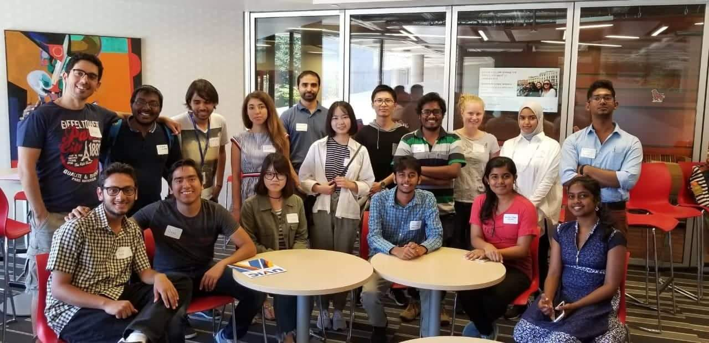

June 23, 2019
In the next blog of the series, Arjun Gupta,
an undergraduate Student in the Department of Economic
Sciences from the Y15 batch, has penned down his experiences
of research intern in University of Victoria, Canada. He was
selected for this intern through the MITACS program. He was
also the Coordinator of Counselling Service from 2018-2019.
MITACS is a program that offers interns in different
universities of Canada, under this program a series of
projects are floated (around 4000) in diverse fields
covering almost every field ranging from engineering to
social sciences. Students are required to fill choices of
their projects in different provinces of Canada.

Getting Interested in Research:
After completing my fourth semester, I was in a
dilemma as to what my interests actually were. Was there
something I was good at or whether I should prepare for the
coming internship season or look for an academic internship.
Well, before all this, I had to figure out how to make my 2nd
year summers more productive. I was lucky enough to get
selected for the SURGE program and this served as one of the
stages where I did not learn much in economics, but did get
help sorting my preference of whether to sit for the coming
internship season or not. My professor was not on campus for a
large part of the summers, but in the limited interactions I
had with him, he gave me the confidence that exploring
research areas in economics is pretty much worth it. Besides,
my parents also didn’t want me working for some private
company, no matter how much they offer in terms of monetary
assets. These two things significantly helped me take a
decision of giving the SPO intern season a pass and putting in
my best possible efforts to get a foreign research internship.
Honestly speaking, more than interest in Economics, it was the
motivation to visit a foreign country that kept me striving
for an academic research internship.
Applying for Foreign Internship

After making my preferences clear about foreign internships, I
started browsing the countries where it was possible to get an
internship along with a stipend. The easier thing to do was to
apply at places where seniors had already gone but being in
Economics, this set was very small. The first place that I
targeted was Germany, simply because few of my seniors from
our previous batches had been there. DAAD - a famous
scholarship program for Germany had it’s deadline in October.
The program requires you to contact a professor in Germany who
is ready to supervise you and DAAD sponsors your visit to
Germany (https://www.daad.de/en/). Getting a professor to supervise and applying for DAAD
scholarship before the deadline was an uphill task. I started
mailing professors in Germany mid-August onwards and mailed
around 100+ professors in a span of a month. Out of more than
100 mails sent, I received responses for only 10-15, those too
negative. Well with 10 days left for the deadline, a professor
finally agreed. Though the university wasn’t that good, I
accepted the opportunity with both hands as I thought that was
the only chance for me to travel abroad. I had a skype
interview with the professor where she inquired about my
expectations from the visit and my areas of interest. I had
seen her profile and a few papers, and answered all questions
aligning with her area of research. I applied for DAAD
scholarship and waited for results till January.
Simultaneously, at the end of August, applications opened up
for the program called MITACS CANADA. Under this program, a
series of projects are floated (around 4000) covering almost
every field ranging from engineering to social sciences.
Students are required to fill choices of seven projects in at
least three different provinces of Canada. The deadline of the
program is around the end of September (usually during the mid
semester exams). If you are really keen on applying for this
program, I strongly recommend that you complete the procedure
a week before the deadline because it becomes really difficult
to manage the application procedure during your mid-terms.
Coming to my application, I applied for the program and
awaited the results. The results were to be declared in two
rounds - December and January. Meanwhile, shifting my focus
from Germany, I started applying in other universities across
the globe like US, UK, France, Australia, etc. I prepared a
list of universities and then browsed the faculty profiles
whose areas of interest fascinated me. For writing mails, it
is usually a good practice to mention the published article on
which the professor has worked and communicate properly as to
how your interests align with his/her interests. I started
making a list of such professors a bit late in the semester.
For a smooth academic research internship application, I would
recommend you to devote some time to this during the summers
itself.
 While I sent hundreds of mails, I did not receive a single
positive response. Well, it was frustrating and to some extent
expected as well. To be on the safer side, I started applying
in India as well in universities like DSE, IIMs, etc. However,
the fortune did not see a turn around there as well. The
period from October till December kept me pondering if it was
a wrong decision for me to not sit for the SPO internship
season and I started panicking. There are other programs as
well (not for the Economics department) - TAMU, NYU, NTU,
VITERBI. A list of such programs is available on International
Relations Website. However, there still was a ray of hope as
the results for the two programs were yet to be announced in
January '18. The New year did not start on a good note at all
- a rejection on the most awaited DAAD scholarship shattered
my hopes completely. It was the only program where a senior
from our department was accepted the previous year. A
rejection here meant that mailing was the only way left to get
the internship. On Jan 14, when the DAAD results were
declared, I sent more than 20 mails that night - rejection
instilled a motivation to try even harder. Well, the effort
was in vain because, firstly I never received a single reply
to these mails and secondly, the next morning I woke up to see
a mail from MITACS that I was accepted for the 3 month
internship in University of Victoria, Canada.
While I sent hundreds of mails, I did not receive a single
positive response. Well, it was frustrating and to some extent
expected as well. To be on the safer side, I started applying
in India as well in universities like DSE, IIMs, etc. However,
the fortune did not see a turn around there as well. The
period from October till December kept me pondering if it was
a wrong decision for me to not sit for the SPO internship
season and I started panicking. There are other programs as
well (not for the Economics department) - TAMU, NYU, NTU,
VITERBI. A list of such programs is available on International
Relations Website. However, there still was a ray of hope as
the results for the two programs were yet to be announced in
January '18. The New year did not start on a good note at all
- a rejection on the most awaited DAAD scholarship shattered
my hopes completely. It was the only program where a senior
from our department was accepted the previous year. A
rejection here meant that mailing was the only way left to get
the internship. On Jan 14, when the DAAD results were
declared, I sent more than 20 mails that night - rejection
instilled a motivation to try even harder. Well, the effort
was in vain because, firstly I never received a single reply
to these mails and secondly, the next morning I woke up to see
a mail from MITACS that I was accepted for the 3 month
internship in University of Victoria, Canada.
Internship Experience:
After a long journey, I finally arrived in Victoria on 05 May
2018, and it did take a week or two to adjust to this new
environment and the major problem was food. I did not know
much about cooking and it was not feasible to eat in
restaurants daily. So, in the initial few weeks, I pushed
myself to learn to cook. While on the other hand, my project
had already started. My supervisor was Dr. Rob Gillezeau who
was working on "Racial Uprisings and Responsiveness of
Government". My supervisor was on leave from the college and
was working for the provincial government. So I had the
freedom of working from home. But, while at a foreign
university, it is always good to make new connections,
interact with people from around the world and getting
accustomed to the work culture especially if one is planning
to pursue higher studies. The good thing about my internship
was MITACS used to organise regular get-together for students
from other countries who had also come through the same
program. During my time, there were around 6 students from
India, one student from Brazil, one from Ukraine and Mexico,
two from Tunisia and there were a few from China. These small
get-togethers made life easy and the internship much more
happening.

On the work front, unlike my other friends, I was not supposed
to work in a lab and neither I had to report to my professor.
So, I used to meet my supervisor weekly in the cafe where we
used to discuss the progress of the project. This was an
experience on its own where there was no one watching you and
neither there was much pressure but it had a side effect of
its own, I used to get a very limited amount of time to
discuss things with the professor and also, no mandatory
attendance often made me lazy. Often when I was struck with
doubts, I had to wait till the next meet to get them cleared.
However, I believe despite these negatives, my professor was
very enthusiastic about my project and made himself free
whenever I wished for a meeting. Since I knew I would have a
limited number of meetings, I tried to work hard for every
meeting so that I could maximise the utility of every meeting.
When I look back, I feel like positives of not having
professor on campus overshadowed the negatives and also
provided me freedom to do research at my comfort level. The
inputs I used to receive were in fact exquisite. There was a
phase during my internship where I felt like I did not have
enough work to do and I conveyed the same to my professor.
After this, he involved me in another project which was of
similar nature and I was happy to contribute to the same. For
those of you who would be going for a research internship, I
believe it is important to convey whatever you feel to the
professor, as they are always ready to provide you with any
kind of help and even go out of way to get your problems
solved.
Besides the research, everyone there took off during the
weekends and enjoyed it to fullest. Usual activities included
trekking, sports, sightseeing and during these, I made some
really close friends from different nations which made the
internship even more fun. The three months went by with the
blink of an eye. Besides, during my stay I was fortunate to be
a part of two conferences in Vancouver whose registration fee
was completely sponsored by MITACS. This gave me an
opportunity to interact with world renowned Mathematicians and
Economists and it was a real pleasure to attend their talks
and the free food that came with the conferences made them
even more exhilirating.
Globalink Research Internship
SURF - Caltech Student-Faculty Programs